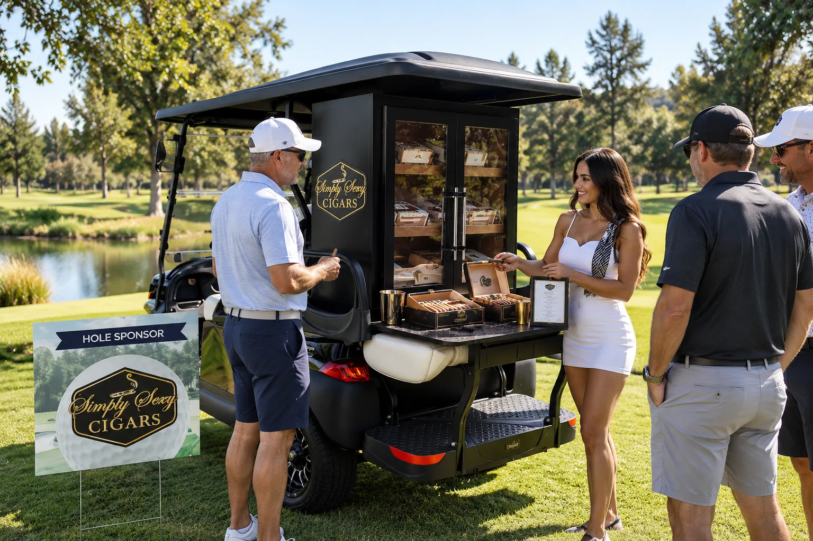
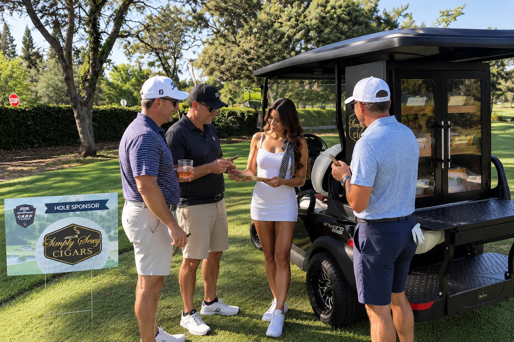

The best golf tournaments are remembered for more than the scorecard. They are remembered for the hospitality, the conversations, and the unexpected moments between shots.
Northern California4 Minute Read
A memorable golf tournament is built on more than eighteen holes. The best events create moments between the shots, the conversations at a tee box, the unexpected stop guests talk about later, and the hospitality that makes the day feel different from every other tournament.
For Simply Sexy Cigars, that is where the experience begins.
The Best Tournaments Give Guests a Reason to Pause.
Golf events naturally move at a steady pace, but some of the most memorable moments happen when guests slow down. A thoughtfully placed cigar experience gives players a reason to stop, browse a curated selection, ask questions, and enjoy a moment before continuing the round.
It becomes more than a sponsor activation. It becomes part of the day.

The experience, positioned where the day happens
More Than a Cigar Table.
Simply Sexy Cigars creates attended cigar experiences designed for golf tournaments, charity events, corporate outings, and country club gatherings.
Guests can explore a curated selection of premium cigars while receiving personal guidance based on their preferences and experience level. From helping a first-time cigar guest choose something approachable to helping an enthusiast discover something new, the service is designed to feel effortless and personal.
The goal is simple: create a stop guests remember.

A curated selection, and a moment to enjoy it
Hospitality Is the Difference.
A premium experience is defined by how guests are treated.
The Simply Sexy Cigars team focuses on presentation, conversation, service, and the small details that make an event feel elevated. Depending on the event, the experience may include professional brand ambassadors, cigar guidance, cutting and lighting assistance, custom displays, and a polished mobile presentation designed for the course.
It should feel like it belongs at the event, not like something that was added at the last minute.
Attended service, from cutting to lighting
A Natural Fit for Charity and Corporate Golf Events.
Golf tournaments bring together clients, donors, sponsors, executives, friends, and community leaders. That makes them especially well suited for experiences that encourage interaction.
A cigar stop can become a natural gathering point where guests connect, sponsors engage, and conversations continue beyond the fairway.
For charity tournaments, it creates another memorable layer to the event. For corporate outings, it offers a distinctive way to entertain clients and guests. For private club events, it adds an elevated hospitality element that feels relaxed and social.
From Northern California to the Bay Area.
Simply Sexy Cigars provides attended golf tournament cigar experiences throughout Northern California, including the San Francisco Bay Area, Sacramento region, Chico, and surrounding communities.
Each event is approached differently based on the venue, guest count, tournament format, and desired experience.
Make the Pit Stop Part of the Experience.
The best golf events are not remembered because everything went exactly as expected. They are remembered because of the moments guests did not expect.
A great cigar. A good conversation. A reason to linger for a few extra minutes.
That is the kind of experience Simply Sexy Cigars was built to create.